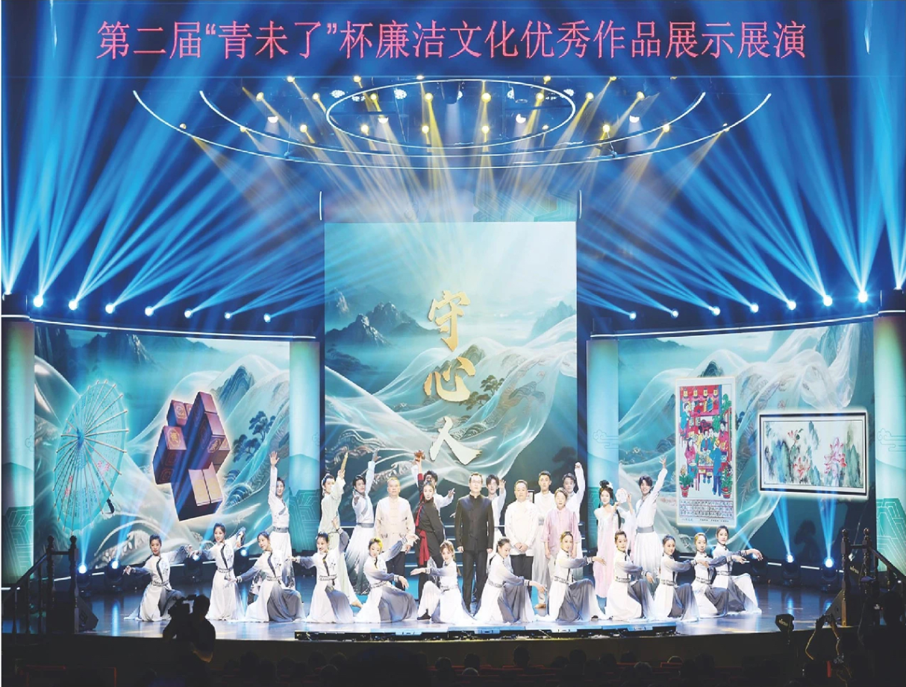
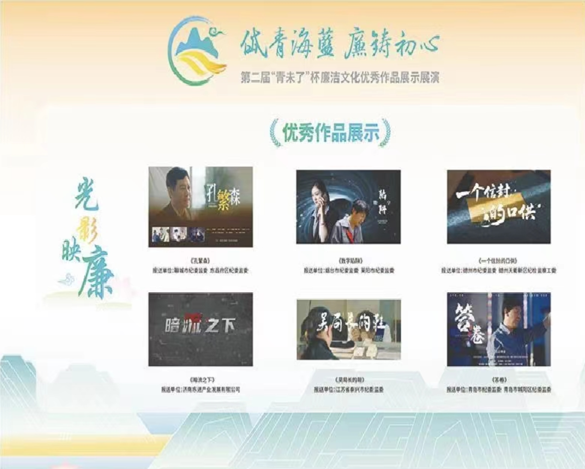
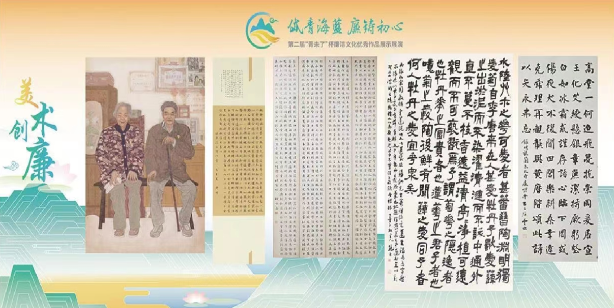

2025年7月24日，大众日报“党风廉政”专版刊发《岱青海蓝 廉铸初心——第二届“青未了”杯廉洁文化作品创作大赛侧记》。全文如下：
  7月3日，第二届“青未了”杯廉洁文化优秀作品展示展演活动在济南成功举办。活动以“岱青海蓝 廉铸初心”为主题，通过非遗创演秀、音诗画等多元艺术形式，生动诠释廉洁主题，着力营造崇廉尚洁良好风尚。
廉洁，是鲁班锁榫卯咬合间的规矩方圆，也是西湖绸伞撑开时竹骨铮铮的凛然姿态；廉洁，既蕴藏在山东黄金玲珑金矿“十三万两黄金送延安”的赤胆忠诚里，也体现在小学生毛丫口中物美价廉校园餐的民生温度中。7月3日晚，第二届“青未了”杯廉洁文化优秀作品展示展演在济南成功举办，通过“光影映廉、戏剧唱廉、美术创廉、文学述廉”四大门类，一场融合传统智慧与时代新风的廉洁文化盛宴精彩呈现。
岱青海蓝，廉铸初心。由中国纪检监察杂志社、山东省纪委监委、山东省文学艺术界联合会、济南市纪委监委、济南高新区党工委主办的第二届“青未了”杯廉洁文化作品创作大赛（以下简称“第二届‘青未了’杯”）自今年2月启动以来，共收到来自全国30个省（区、市）的参赛作品39384部，总量是首届的5.6倍，社会关注度和行业影响力显著提升。
当前，深入贯彻中央八项规定精神学习教育正在开展。随着第二届“青未了”杯大赛及展示展演活动的成功举办，通过以赛促建、以建促廉，推动清廉建设全域共进，不断深化新时代廉洁文化建设，让广大党员干部在光影艺术中追寻廉洁文化的源流，于精美作品中感受清廉之风的传承，“日用而不觉”地涵养良好作风，在遵规守纪前提下，勤奋工作、放手干事、锐意进取、积极作为。
随身携带黄金，辗转冀鲁豫、太行、陕甘宁等多个抗日根据地，还要不时提防沿途敌人的围追堵截……面对如此艰难险境，你会怎样选择？80多年前，中共胶东特委领导下的招远军民给出了自己的回答。自1937年至1945年，在中共胶东特委的领导下，玲珑金矿和招远抗日军民筹集约13万两黄金送到延安，无数英雄血染运金路，却没发生过一起携金叛逃事件，没丢失过一两黄金。这正是第二届“青未了”杯“文学述廉”类一等奖作品《赤金千里送延安》所讲述的动人故事。
“选取这个真实历史事件作为文学创作原型，不仅因为其背后蕴含的红色文化、廉洁基因，更基于这是发生在我们身边的故事，是我们革命前辈的英雄壮举。我们应该把这种‘以命护金、人在金在、克金不失、无私献金’的精神保护好、传承好、发扬好。”山东黄金集团纪委副书记刘洪武介绍，公司每年组织新入职员工和新提拔干部到山东黄金玲珑红色教育基地进行参观学习，追忆红色岁月、接受廉洁教育。
从挖掘红色革命故事的《赤金千里送延安》到展现东汉名臣杨震“暮夜却金”典故的《四知堂》，再到讲述新时代平凡人在平凡岗位上廉铸初心的《师心如月》……第二届“青未了”杯参赛作品在廉洁叙事创新与中华优秀传统文化、革命文化、社会主义先进文化贯通融合上取得更大突破，廉洁内涵挖掘更加深入，很多获奖作品以独特视角与精湛手法，实现了政治性、思想性、艺术性的高度统一，为新时代廉洁文化建设注入了源头活水。
“展示展演活动深刻诠释了廉洁文化的思想内涵和时代价值，让廉的精神理念透过作品本身直达观众内心。”“不管是炫酷的AI视频，还是有趣的廉洁小品，只有大家爱看，廉洁理念才能记得牢。”……省纪委监委宣传部有关负责同志介绍，第二届“青未了”杯获奖作品通过网络发布后，浏览量已达千万人次，特别是组委会创作的大赛主题曲《清气满乾坤》，广大网友好评如潮。这启示我们，要持续加大以文化人、化风成俗力度，不断丰富廉洁文化产品和服务供给形式，把廉洁理念从网络、舞台带到现实生活的角角落落。
连续举办两届接地气、有影响的廉洁文化赛事活动，是山东扎实推进新时代廉洁文化建设的生动实践。近年来，山东充分发挥廉洁文化建设基础性作用，深度挖掘全省丰富廉洁文化资源，创新表现形式，拓展载体渠道，让清廉之风劲吹齐鲁大地。编印《山东地方志中的清官廉吏》《山东根据地廉洁文化建设》等图书；遴选165家有代表性阵地汇编《山东廉洁教育地图》，建立全省廉洁教育阵地体系；举办“山东清官廉政史话展”，拍摄大型廉洁文化纪录片《官箴里的清廉》，一批批群众喜闻乐见的廉洁文化作品相继涌现，助力涵养风清气正的政治生态。
全国30个省（区、市）报送的39384部参赛作品，既涵盖微电影、微视频、微短剧等新媒体作品，也包含文学、美术、文创、书法等传统艺术形式；参赛方既有党政机关、企事业单位、大中专院校，也有街道社区和媒体……参与更广泛、类型更丰富、群体更多元，这一显著特点彰显了第二届“青未了”杯不仅是一项赛事活动，更是把廉洁文化种子播种到社会各个领域的培育平台。
廉洁奉公、实干担当应该是什么样子？“光影映廉”类一等奖作品《答卷》对此作出生动诠释。影片通过青岛市城阳区某村旧村改造中的几件矛盾冲突，映衬出村党支部书记老李的为民情怀、实干品质。实习大学生小王从眼高手低到脚踏实地实现思想蜕变，最终用实际行动收获了实习满意度答卷好评，并在毕业后选择回村工作，继续用青春续写为民答卷。影片从小切口入手，以小人物着眼，在烟火气中传播正能量，于无声处回答大命题——时代考题常出常新，清廉与实干不可或缺。
“本着廉洁文化作品创作要贴近群众、贴近生活的理念，我们在实地调研中发现该村在清廉村居建设中取得了良好效果，就萌生了以此鲜活实践为蓝本进行创作的想法，于是就有了微电影《答卷》。”青岛市纪委常委、秘书长程道年介绍，创作以清廉村居为主题的微电影，既是挖掘身边可感可知廉洁因子的具体实践，也是推动新时代廉洁文化建设向基层延伸、融入基层治理的有益探索。
不仅是清廉村居建设，获奖作品中还有反映清廉学校建设的微电影《毛丫的幸福生活》，反映清廉医院建设的小说《统方之惑》……用“小故事”阐述“大道理”，以“小切口”传播“大主题”，作品通过各类艺术表现形式全方位展示廉洁文化，让清风正气看得见、摸得着、传得开。“大赛既鼓励展示全面从严治党、党风廉政建设的生动实践，又倡导挖掘各类传统文化中的廉洁理念，更注重展现清廉单元建设的实际成果，这样丰富多元的选题方向，能够充分激发创作者的灵感。”第二届“青未了”杯大赛总顾问、中国社科院新闻与传播研究所视听研究室主任冷凇说。
值得一提的是，本届大赛共收到外省作品2100余部，其中江苏、重庆、西藏等地报送的作品3部获得一等奖。在征集作品类型上分层扩容，特别是美术创廉、文学述廉门类，形式丰富、覆盖面广，无论是党员干部还是基层群众、在校学生，只要心中有梦、手中有笔，都可以踊跃投稿、施展才华。据统计，这两类获奖作品中绝大多数是个人作者，也呼应了廉洁文化“全民参与、共建共享”的理念。
此外，本届“青未了”杯坚持廉洁办赛，严格落实中央八项规定及其实施细则精神，始终绷紧勤俭节约这根弦，从赛事组织、展示展演、场地布置，到接待服务、节目编排，都注重内部挖潜、借势借力，廉洁剧目展演也将被纳入省文旅厅公益场次安排，确保活动勤俭节约、廉洁高效。
省委高度重视清廉山东建设，以上率下履行主体责任，将清廉山东建设分别写入省委常委会、党的建设工作领导小组、全面深化改革委员会年度工作要点，并在省委十二届六次、七次全会上作出具体安排部署；去年7月，出台《关于全面建设清廉山东的意见》，部署18项重点内容。坚持“管行业必须管行风”“抓系统必须抓清廉”，深化清廉机关、企业、学校、医院、村居等清廉单元建设，因地制宜培育打造清廉单元建设特色标杆，以点上突破带动系统提升、全面深化，推动清廉价值理念与正风肃纪反腐深度融合，清廉建设融入经济社会发展各方面全过程。
齐鲁大地文化底蕴深厚、源远流长。以全面推进清廉山东建设为契机，持续深挖齐鲁文化丰富廉洁元素的同时，面向全国连续举办“青未了”杯大赛及展示展演活动，以此不断扩大廉洁文化产品供给，创新拓展廉洁文化传播渠道，让越来越多的党员干部群众主动参与廉洁文化建设，在潜移默化中接受廉洁教育和思想熏陶。
从2023年10月策划启动，到今年茁壮成长，“青未了”杯大赛已逐步成为山东乃至全国参赛人数最多、门类最齐全、覆盖面和影响力都较大的文化赛事。一部部廉洁文化作品，一件件廉洁文创产品，实现串点成线、连线成片，形成人人参与、人人共享的生动局面，推动崇廉尚洁新风正气不断充盈，为进一步全面深化改革汇聚起强大正能量。（齐 静）